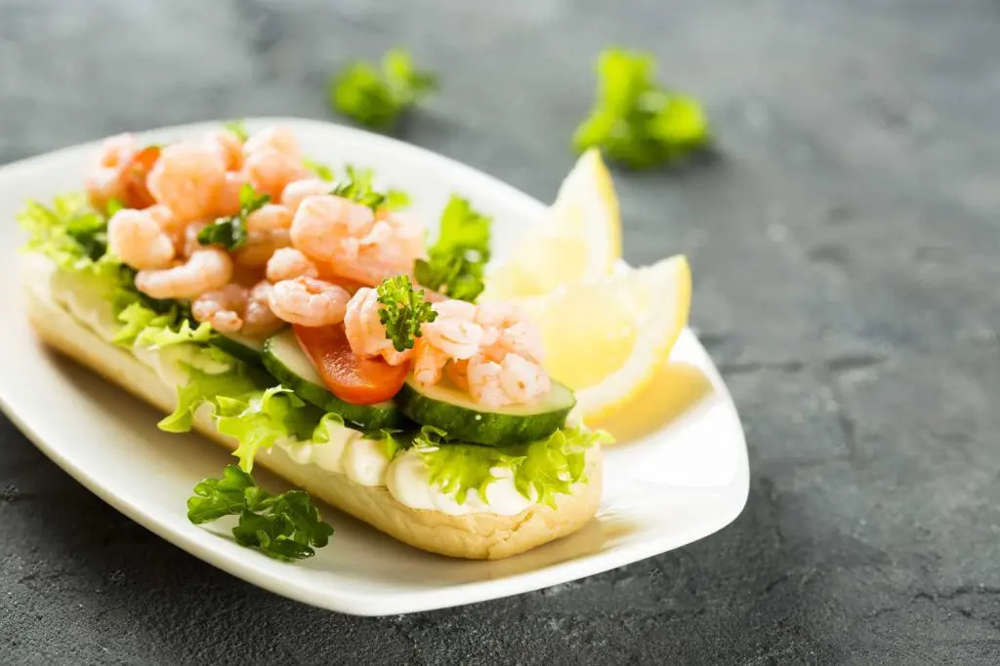

kosher salt
12 ources of raw shrimp
1 1/2 teaspoons Old bay seasoning
1/3 cup mayonaise
2 teaspoons lemon juices
1/4 teaspoon Worcestershire sauce
1 to 2 ribs celery, coarsely chopped
1/3 cup coarsely chopped scallions
2 sandwich rolls, hoagie rolls, or large hamburger buns, split and toasted
3/4 cup shredded iceberg or romaine lettuce
About
This shrimp salad is good served over greens or stuffed into tomatoes or piled atop lettuce, but it shines its brightest on toasted buns with shredded lettuce. Made with shrimp, celery, scallions, lemon juice, mayo, and a touch of Old Bay, this recipe is light and refreshing, perfect for lunch on a summer day.
Steps
- Add the kosher salt to a quart or so of water in a medium pot.
- Bring just to a simmer and add the shrimp. Stir and cook for 1 to 2 minutes (depending on the size of the shrimp); they should be pink and barely translucent.
- Drain, rinse briefly under cool water, and pat dry.
- Place the shrimp in a small bowl and add 1/2 teaspoon of the Old Bay and 1 teaspoon of the lemon juice.
- Toss to coat and place in the refrigerator for 20 minutes or so, to cool completely.
- Whisk the remaining Old Bay, remaining lemon juice, the mayonnaise, and Worcestershire sauce together in a medium-size bowl.
- Add cooled shrimp, celery, and scallions to the dressing and toss gently to coat. Adjust seasoning, adding more lemon juice and salt, if necessary.
- Serve on toasted rolls or buns with shredded lettuce.